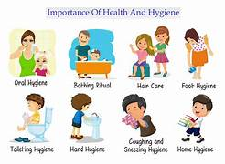
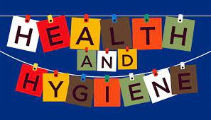
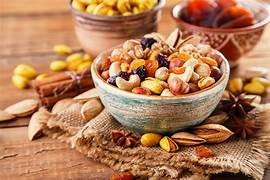
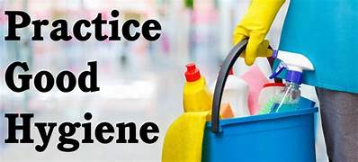

Live life cleaner And Make Earth greener
"The greatest Wealth is The Health"
HEALTH AND HYGIENE
Hygiene refers to the good practices and rituals that prevent diseases and leads to good health.Thus it mainly includes proper sewage disposal,cleanliness,and safe drinking water supply.
Health and Hygiene are two essential concepts when it comes to the human body.health refers to the state of physically as well as mental well being.health is not just about being fit but also having a sound body and mind is an indication of good health.
Tips for Good Hygiene
Good hygiene is crucial for maintaining overall health and preventing the spread of illnesses. Here are some tips for practicing good hygiene:


Food for Healthy Diet
A healthy diet should include a variety of nutrient-dense foods that provide essential vitamins, minerals, and other beneficial compounds. Here are some food groups and examples of healthy options within each group:
- Fruits and vegetables:Citrus fruits (oranges, lemons, grapefruits)Leafy greens (spinach, kale, Swiss chard)
- Whole grains:Brown rice,Oats
- Lean proteins:Fish (salmon, tuna, sardines),Skinless poultry (chicken, turkey)
- Healthy snacks:Nuts and seeds,Raw vegetables with hummus,Fresh fruit
Importance of hygiene and health
Health and hygiene play a crucial role in maintaining overall well-being and preventing the spread of diseases. Here are some key points highlighting the importance of health and hygiene:
- Disease Prevention: Practicing good hygiene, such as regular handwashing, proper sanitation, and cleanliness, significantly reduces the risk of contracting and spreading infectious diseases.
- Personal Well-being: Maintaining good health and hygiene practices promotes personal well-being. It includes taking care of one's physical, mental, and emotional health. Regular exercise, a balanced diet, sufficient sleep, and stress management contribute to overall wellness and a higher quality of life.
- Improved Public Health: When individuals prioritize their health and practice good hygiene, it has a positive impact on public health. By reducing the prevalence of diseases within communities, the burden on healthcare systems decreases, leading to better resource allocation and improved healthcare services for everyone.
- Increased Productivity: Healthy individuals are more likely to be productive in their personal and professional lives. By prioritizing health and hygiene, people can reduce the occurrence of illnesses that may result in absenteeism from work or school. Regular exercise and a balanced diet also enhance cognitive function, concentration, and overall productivity.
- Long-Term Disease Prevention: Practicing good health and hygiene habits from an early age can have long-term benefits. It reduces the risk of developing chronic diseases like obesity, heart disease, diabetes, and certain types of cancer. By adopting healthy behaviors and maintaining proper hygiene, individuals can lead longer, healthier lives.
- Environmental Health: Health and hygiene practices extend beyond personal care to include environmental considerations. Proper waste management, clean water supply, and pollution control measures contribute to a healthier environment. Preserving a clean and sustainable environment is essential for the well-being of current and future generations.
- It is important to note that health and hygiene practices should be integrated into daily routines and promoted at individual, family, community, and societal levels. Education, awareness campaigns, and access to healthcare services are vital in ensuring widespread adoption of healthy habits and maintaining a safe and hygienic environment for all. Regenerate response
Conclusion
In conclusion, health and hygiene are of utmost importance for individuals, communities, and society as a whole. By practicing good health and hygiene habits, we can prevent the spread of diseases, promote personal well-being, improve public health, increase productivity, enhance social interactions, prevent long-term diseases, and contribute to environmental health.
about us
welcome to health and hygiene website!we are educating the people about the importance of being hygeine and their health
on our website ,you will find a wide range of articles and tips on various health and hygeine topics.we will cover all the information on importance of personal hygeine and self care techniques